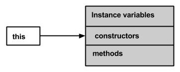

Java - Methods
A Java method is a collection of statements that are grouped together to perform an operation. When you call the System.out.println() method, for example, the system actually executes several statements in order to display a message on the console.
Now you will learn how to create your own methods with or without return values, invoke a method with or without parameters, and apply method abstraction in the program design.
Creating Method
Considering the following example to explain the syntax of a method −
Syntax
public static int methodName(int a, int b) {
// body
}
Here,
public static − modifier
int − return type
methodName − name of the method
a, b − formal parameters
int a, int b − list of parameters
Method definition consists of a method header and a method body. The same is shown in the following syntax −
Syntax
modifier returnType nameOfMethod (Parameter List) {
// method body
}
The syntax shown above includes −
modifier − It defines the access type of the method and it is optional to use.
returnType − Method may return a value.
nameOfMethod − This is the method name. The method signature consists of the method name and the parameter list.
Parameter List − The list of parameters, it is the type, order, and number of parameters of a method. These are optional, method may contain zero parameters.
method body − The method body defines what the method does with the statements.
Example
Here is the source code of the above defined method called max(). This method takes two parameters num1 and num2 and returns the maximum between the two −
/** the snippet returns the minimum between two numbers */
public static int minFunction(int n1, int n2) {
int min;
if (n1 > n2)
min = n2;
else
min = n1;
return min;
}
Method Calling
For using a method, it should be called. There are two ways in which a method is called i.e., method returns a value or returning nothing (no return value).
The process of method calling is simple. When a program invokes a method, the program control gets transferred to the called method. This called method then returns control to the caller in two conditions, when −
- the return statement is executed.
- it reaches the method ending closing brace.
The methods returning void is considered as call to a statement. Lets consider an example −
System.out.println("This is tutorialspoint.com!");
The method returning value can be understood by the following example −
int result = sum(6, 9);
Following is the example to demonstrate how to define a method and how to call it −
Example
public class ExampleMinNumber {
public static void main(String[] args) {
int a = 11;
int b = 6;
int c = minFunction(a, b);
System.out.println("Minimum Value = " + c);
}
/** returns the minimum of two numbers */
public static int minFunction(int n1, int n2) {
int min;
if (n1 > n2)
min = n2;
else
min = n1;
return min;
}
}
This will produce the following result −
Output
Minimum value = 6
The void Keyword
The void keyword allows us to create methods which do not return a value. Here, in the following example we're considering a void method methodRankPoints. This method is a void method, which does not return any value. Call to a void method must be a statement i.e. methodRankPoints(255.7);. It is a Java statement which ends with a semicolon as shown in the following example.
Example
public class ExampleVoid {
public static void main(String[] args) {
methodRankPoints(255.7);
}
public static void methodRankPoints(double points) {
if (points >= 202.5) {
System.out.println("Rank:A1");
}else if (points >= 122.4) {
System.out.println("Rank:A2");
}else {
System.out.println("Rank:A3");
}
}
}
This will produce the following result −
Output
Rank:A1
Passing Parameters by Value
While working under calling process, arguments is to be passed. These should be in the same order as their respective parameters in the method specification. Parameters can be passed by value or by reference.
Passing Parameters by Value means calling a method with a parameter. Through this, the argument value is passed to the parameter.
Example
The following program shows an example of passing parameter by value. The values of the arguments remains the same even after the method invocation.
public class swappingExample {
public static void main(String[] args) {
int a = 30;
int b = 45;
System.out.println("Before swapping, a = " + a + " and b = " + b);
// Invoke the swap method
swapFunction(a, b);
System.out.println("\n**Now, Before and After swapping values will be same here**:");
System.out.println("After swapping, a = " + a + " and b is " + b);
}
public static void swapFunction(int a, int b) {
System.out.println("Before swapping(Inside), a = " + a + " b = " + b);
// Swap n1 with n2
int c = a;
a = b;
b = c;
System.out.println("After swapping(Inside), a = " + a + " b = " + b);
}
}
This will produce the following result −
Output
Before swapping, a = 30 and b = 45 Before swapping(Inside), a = 30 b = 45 After swapping(Inside), a = 45 b = 30 **Now, Before and After swapping values will be same here**: After swapping, a = 30 and b is 45
Method Overloading
When a class has two or more methods by the same name but different parameters, it is known as method overloading. It is different from overriding. In overriding, a method has the same method name, type, number of parameters, etc.
Let’s consider the example discussed earlier for finding minimum numbers of integer type. If, let’s say we want to find the minimum number of double type. Then the concept of overloading will be introduced to create two or more methods with the same name but different parameters.
The following example explains the same −
Example
public class ExampleOverloading {
public static void main(String[] args) {
int a = 11;
int b = 6;
double c = 7.3;
double d = 9.4;
int result1 = minFunction(a, b);
// same function name with different parameters
double result2 = minFunction(c, d);
System.out.println("Minimum Value = " + result1);
System.out.println("Minimum Value = " + result2);
}
// for integer
public static int minFunction(int n1, int n2) {
int min;
if (n1 > n2)
min = n2;
else
min = n1;
return min;
}
// for double
public static double minFunction(double n1, double n2) {
double min;
if (n1 > n2)
min = n2;
else
min = n1;
return min;
}
}
This will produce the following result −
Output
Minimum Value = 6 Minimum Value = 7.3
Overloading methods makes program readable. Here, two methods are given by the same name but with different parameters. The minimum number from integer and double types is the result.
Using Command-Line Arguments
Sometimes you will want to pass some information into a program when you run it. This is accomplished by passing command-line arguments to main( ).
A command-line argument is the information that directly follows the program's name on the command line when it is executed. To access the command-line arguments inside a Java program is quite easy. They are stored as strings in the String array passed to main( ).
Example
The following program displays all of the command-line arguments that it is called with −
public class CommandLine {
public static void main(String args[]) {
for(int i = 0; i<args.length; i++) {
System.out.println("args[" + i + "]: " + args[i]);
}
}
}
Try executing this program as shown here −
$java CommandLine this is a command line 200 -100
This will produce the following result −
Output
args[0]: this args[1]: is args[2]: a args[3]: command args[4]: line args[5]: 200 args[6]: -100
The Constructors
A constructor initializes an object when it is created. It has the same name as its class and is syntactically similar to a method. However, constructors have no explicit return type.
Typically, you will use a constructor to give initial values to the instance variables defined by the class, or to perform any other startup procedures required to create a fully formed object.
All classes have constructors, whether you define one or not, because Java automatically provides a default constructor that initializes all member variables to zero. However, once you define your own constructor, the default constructor is no longer used.
Example
Here is a simple example that uses a constructor without parameters −
// A simple constructor.
class MyClass {
int x;
// Following is the constructor
MyClass() {
x = 10;
}
}
You will have to call constructor to initialize objects as follows −
public class ConsDemo {
public static void main(String args[]) {
MyClass t1 = new MyClass();
MyClass t2 = new MyClass();
System.out.println(t1.x + " " + t2.x);
}
}
Output
10 10
Parameterized Constructor
Most often, you will need a constructor that accepts one or more parameters. Parameters are added to a constructor in the same way that they are added to a method, just declare them inside the parentheses after the constructor's name.
Example
Here is a simple example that uses a constructor with a parameter −
// A simple constructor.
class MyClass {
int x;
// Following is the constructor
MyClass(int i ) {
x = i;
}
}
You will need to call a constructor to initialize objects as follows −
public class ConsDemo {
public static void main(String args[]) {
MyClass t1 = new MyClass( 10 );
MyClass t2 = new MyClass( 20 );
System.out.println(t1.x + " " + t2.x);
}
}
This will produce the following result −
Output
10 20
The this keyword
this is a keyword in Java which is used as a reference to the object of the current class, with in an instance method or a constructor. Using this you can refer the members of a class such as constructors, variables and methods.
Note − The keyword this is used only within instance methods or constructors
In general, the keyword this is used to −
Differentiate the instance variables from local variables if they have same names, within a constructor or a method.
class Student {
int age;
Student(int age) {
this.age = age;
}
}
Call one type of constructor (parametrized constructor or default) from other in a class. It is known as explicit constructor invocation.
class Student {
int age
Student() {
this(20);
}
Student(int age) {
this.age = age;
}
}
Example
Here is an example that uses this keyword to access the members of a class. Copy and paste the following program in a file with the name, This_Example.java.
public class This_Example {
// Instance variable num
int num = 10;
This_Example() {
System.out.println("This is an example program on keyword this");
}
This_Example(int num) {
// Invoking the default constructor
this();
// Assigning the local variable num to the instance variable num
this.num = num;
}
public void greet() {
System.out.println("Hi Welcome to Tutorialspoint");
}
public void print() {
// Local variable num
int num = 20;
// Printing the local variable
System.out.println("value of local variable num is : "+num);
// Printing the instance variable
System.out.println("value of instance variable num is : "+this.num);
// Invoking the greet method of a class
this.greet();
}
public static void main(String[] args) {
// Instantiating the class
This_Example obj1 = new This_Example();
// Invoking the print method
obj1.print();
// Passing a new value to the num variable through parametrized constructor
This_Example obj2 = new This_Example(30);
// Invoking the print method again
obj2.print();
}
}
This will produce the following result −
Output
This is an example program on keyword this value of local variable num is : 20 value of instance variable num is : 10 Hi Welcome to Tutorialspoint This is an example program on keyword this value of local variable num is : 20 value of instance variable num is : 30 Hi Welcome to Tutorialspoint
Variable Arguments(var-args)
JDK 1.5 enables you to pass a variable number of arguments of the same type to a method. The parameter in the method is declared as follows −
typeName... parameterName
In the method declaration, you specify the type followed by an ellipsis (...). Only one variable-length parameter may be specified in a method, and this parameter must be the last parameter. Any regular parameters must precede it.
Example
public class VarargsDemo {
public static void main(String args[]) {
// Call method with variable args
printMax(34, 3, 3, 2, 56.5);
printMax(new double[]{1, 2, 3});
}
public static void printMax( double... numbers) {
if (numbers.length == 0) {
System.out.println("No argument passed");
return;
}
double result = numbers[0];
for (int i = 1; i < numbers.length; i++)
if (numbers[i] > result)
result = numbers[i];
System.out.println("The max value is " + result);
}
}
This will produce the following result −
Output
The max value is 56.5 The max value is 3.0
The finalize( ) Method
It is possible to define a method that will be called just before an object's final destruction by the garbage collector. This method is called finalize( ), and it can be used to ensure that an object terminates cleanly.
For example, you might use finalize( ) to make sure that an open file owned by that object is closed.
To add a finalizer to a class, you simply define the finalize( ) method. The Java runtime calls that method whenever it is about to recycle an object of that class.
Inside the finalize( ) method, you will specify those actions that must be performed before an object is destroyed.
The finalize( ) method has this general form −
protected void finalize( ) {
// finalization code here
}
Here, the keyword protected is a specifier that prevents access to finalize( ) by code defined outside its class.
This means that you cannot know when or even if finalize( ) will be executed. For example, if your program ends before garbage collection occurs, finalize( ) will not execute.